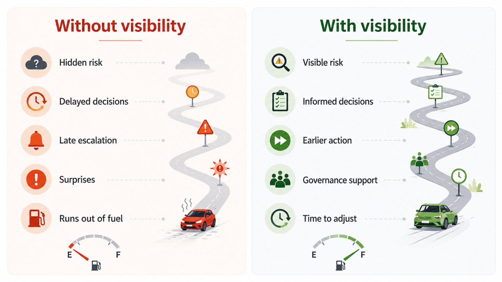

A car has 50 km of remaining range.
The fuel gauge shows it clearly on the dashboard.
The dashboard does not control the driver.
It does not turn the wheel.
It does not press the brake.
It does not decide where the car should go.
But it makes something important visible.
Now the driver can make an informed decision:
Stop at a gas station. Add fuel. Change the route. Or ignore the warning and accept the risk.
The dashboard has no formal authority over the driver. But it influences the driver's decisions by making reality visible.
That is very similar to what a Project Manager who creates visibility can do.
Influence without formal authority
Project Managers often work in environments where they do not have full authority over all the people and decisions that affect the project.
Developers may report to a Development Manager. QA analysts may report to a QA Manager. Business Analysts may report to a Product Manager, Business Manager, or another functional leader. Clients have their own priorities. Sponsors and upper management have their own decision-making processes.
In this context, it is important to separate two things: formal authority and leadership.
Formal authority is when the PM is someone's manager, has direct reports, or has organizational power to assign work, evaluate performance, or make certain decisions.
Leadership is different. Leadership happens when people follow the PM's direction because the PM creates clarity, trust, alignment, and momentum.
A project team may follow the PM's direction even when the PM is not their boss. That influence may come from helping the team understand priorities, removing blockers, making risks visible, and supporting better decisions.
But even when the PM can lead the project team through influence, the PM may not have authority over the client, sponsor, or upper management.
That is why influence is needed in multiple directions: across the team, upward to leadership, and outward to the client.
Influence is not only a substitute for authority. Influence is a leadership skill.
Making the right signals visible
A Project Manager who creates visibility helps the organization see what is happening early enough to act. Not by controlling every moving part. But by making the right signals visible.
Risks. Dependencies. Blocked work. Pending decisions. Scope changes. Budget trends. Quality issues. Client action items. Release readiness.
These indicators work like a project dashboard. They do not force people to act. But they create transparency. They support better decisions. They reduce surprises. And they help decision-makers understand the cost of inaction.
When the indicators are relevant and credible, the Project Manager can influence behaviour even without formal authority.
What happens when the fuel gauge is broken?
Now imagine the same car. It still has only 50 km of remaining range. But the fuel gauge is broken. No alert appears on the dashboard. The driver does not see the risk. The car keeps moving. Everything may look fine for a while. Until it stops.
Projects can work the same way.
A project may be running out of budget. But the burn rate is not visible. The team may be losing capacity. But nobody is measuring the impact. Requirements may be changing too often. But the volatility is not being tracked. Defects may be increasing. But the trend is not clear. Client approvals may be delayed. But the impact on the timeline is not visible. A go-live date may be at risk. But the organization only realizes it when it is too late.
Often, the challenge is not a lack of commitment. The challenge is that the right signals are not visible soon enough.

Credibility matters
Indicators only create influence when people trust them. If the dashboard is noisy, exaggerated, inconsistent, or political, people stop paying attention. A fuel gauge that is always wrong becomes useless. The same is true in project management.
The PM needs to protect the credibility of the indicators. That means being clear, objective, balanced, and consistent.
Not every issue is a crisis. Not every risk requires escalation. Not every delay means failure.
Project indicators should help people think, not panic. They should create alignment, not blame. They should make reality visible without turning the project environment into a courtroom.
Examples of useful signals
The right indicators depend on the project, the organization, and the decisions that need to be made. There is no universal dashboard that works for every situation.
But a few examples can illustrate how indicators can help different audiences.
For developers, backlog readiness can make unclear requirements visible before work starts. This helps reduce rework and supports better conversations about what is truly ready for development.
For QA, escaped defects can show whether issues are reaching later environments, UAT, production, or the client after they should have been caught earlier. This helps the team understand where quality risk is increasing and where testing, refinement, or development practices may need attention.
For Business Analysts, requirement clarification backlog can make open questions visible and help prioritize the conversations needed to move the project forward.
For upper management, decision aging can show how long key decisions have been pending and where leadership support may be needed.
For the client, approval cycle time can show how delayed reviews or approvals may affect development, testing, and go-live readiness.
These are only examples. The point is not to create a long list of indicators. The point is to select indicators that make the right risks, decisions, and dependencies visible to the right people at the right time.
Indicators should be used wisely
Of course, not every indicator is useful. A project dashboard should create clarity, not confusion. Too many indicators can create unnecessary overhead, distract the team, and obscure the real issues.
If everything is being measured, but nobody knows what really matters, the dashboard is not helping. It is just creating noise.
That is why relevant indicators are more important than many indicators.
Some indicators may be built from metrics or KPIs, but their purpose is not only to measure performance. Their purpose is to support better decisions.
The right indicators should answer practical questions: Are we on track? What is blocked? What decision is needed? What risk is increasing? What changed since the last update? Where do we need support?
A Project Manager who creates visibility should be intentional about what is measured, how often it is updated, and who actually uses the information. The goal is not to measure everything. The goal is to make the right signals visible with the least possible overhead.
Reducing overhead through automation
Automation can help a lot. When indicators are manually collected, they can easily become another administrative burden. This is where emerging AI-enabled PMO practices become especially relevant.
When indicators are connected to tools such as Jira, Azure DevOps, project plans, dashboards, reporting templates, and AI-supported workflows, the PM can reduce overhead and improve indicator readiness.
AI tools can help summarize project updates, detect patterns, highlight risks, prepare status reports, consolidate decisions, and turn scattered project information into useful signals.
This does not remove the need for the Project Manager. It changes the PM's focus. Instead of spending too much time collecting and formatting information, the PM can spend more time interpreting the signals, validating what really matters, and influencing the right conversations.
The goal is not to automate judgment. The goal is to reduce friction so relevant indicators are available earlier, more consistently, and with less manual effort.
Creating consistency across programs
This becomes even more powerful across programs. When multiple PMs report using a shared core set of indicators, tailored to the project context, the organization gains consistency without ignoring the uniqueness of each project.
Leaders may not be able to compare every project directly because each project has its own context, complexity, and constraints. But they can interpret project health more consistently. They can see where risks are increasing, where decisions are aging, where dependencies are blocking progress, and where leadership support may be needed.
Teams understand expectations better. Governance becomes less dependent on each PM's individual reporting style.
Consistency does not mean every project needs the exact same dashboard. Different projects may need different signals. But a shared set of core indicators helps create a common language for delivery, risk, quality, and decision-making.
In other words, a dashboard should be simple enough to be understood, relevant enough to drive action, and consistent enough to support decisions across the organization.
When visibility requires governance support
Sometimes, even relevant and credible indicators are not enough to drive change. The risk is visible. The data is clear. The impact is understood. But the project still cannot move forward because the people closest to the issue lack the authority to resolve it.
This is when escalation becomes part of responsible project governance.
Escalation should not be used as a threat. It should not be a way to blame people. And it should not be the first tool of influence.
But when visibility alone is not enough, escalation helps bring the right decision-makers into the conversation.
A good escalation does not say: "Someone is not doing their job." It says: "The project has a visible risk, the team cannot resolve it at this level, and we need a decision or support before the project runs out of fuel."
That is a healthier way to escalate. It keeps the focus on the project outcome.
Creating impact through visibility
A Project Manager may not have the authority to make every decision. But a Project Manager can influence the quality and timing of those decisions.
The PM may not control every team member. But the PM can create clarity around priorities, blockers, risks, and dependencies.
The PM may not have authority over the client, sponsor, or upper management. But the PM can provide the information they need to act earlier and with better judgment.
That is why relevant indicators matter. They are not just administrative tools. They are leadership tools. They are influential tools. They are the project's fuel gauge.
The fuel gauge does not drive the car. But without it, the driver may discover the problem only when the car stops.
In the same way, a Project Manager does not need to control every decision to create impact. Sometimes, the greatest contribution is making the right signals visible early enough for others to act.